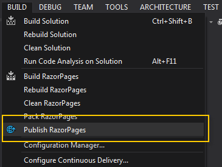
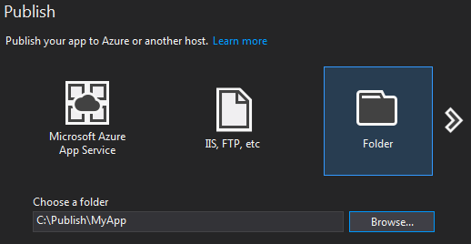
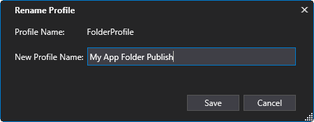
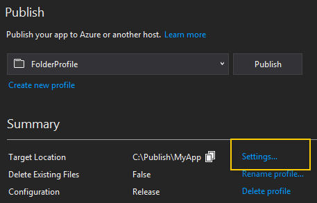
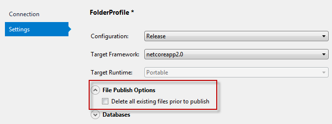
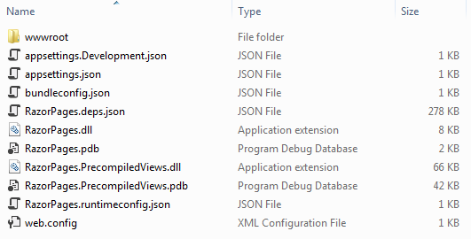
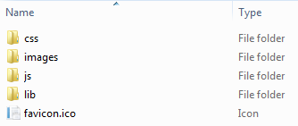
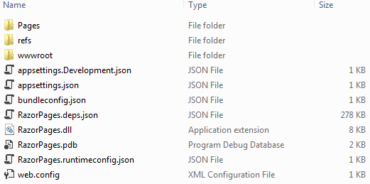

One you have built your Razor Pages application, it needs to be published and deployed to a hosting platform. This tutorial will examine the steps required to deploy a Razor Pages application to a Windows Server running Microsoft's Internet Information Services (IIS) web server software.
Publishing
Publishing is the process that prepares your application for deployment. The publishing process compiles the source code files into assemblies with a .dll extension. Typically, the process will generate two assemblies - one for the project (MyProject.dll) and one for the views (MyProject.Views.dll - was MyProject.PrecompiledViews.dll prior to ASP.NET Core 2.1). If you have source code in other projects, .dll files will be generated for each one of them.
Publishing also results in various configuration files being generated. You will examine those shortly.
Publishing can be done via the Command Line Interface (CLI) using dotnet commands, or you can use the built in publishing tools provided by Visual Studio, if you have access to it. The CLI approach provides one publishing option - to a folder. Visual Studio offers a variety of additional options including one-step publish and deploy to various Azure services, publish and deploy via FTP and Web Deploy, and creating a Web Deploy package. Here, we will only look at publishing to a folder. The resulting artefacts can be deployed to the hosting server using FTP or some other file copying method.
Prior to publishing, you need to ensure that the target server has the NET Core Windows Server Hosting bundle installed. It can be downloaded from here. It installs the .NET Core runtime, .NET Core library and the ASP.NET Core Module - an IIS module that enables IIS to be used as a reverse proxy for your Razor application.
What is a reverse proxy?
A reverse proxy in the context of a web application is a server that handles requests and retrieves resources from other servers on behalf of a client. IIS performs this role mainly because it is capable of handling requests for muultiple domains on the same port number (typically port 80 for HTTP requests and 443 for HTTPS requests), whereas Kestrel, the .Net Core HTTP server that is bundled with your ASP.NET Core application is not capable of doing this. Therefore HTTP requests coming into the Windows server are primarily handled by IIS, then passed on to the specific ASP.NET Core application, where its instance of Kestrel will take care of processing the request and generating the response. This is then passed back to IIS before being passed on to the requesting client.

Publish using the CLI
The CLI command for publishing is dotnet publish. All of the options are detailed in the table below:
| Option | Description |
|---|---|
-h, --help |
Show help information. |
-o, --output <OUTPUT_DIR> |
Output directory in which to place the published artifacts. |
-f, --framework <FRAMEWORK> |
Target framework to publish for. The target framework has to be specified in the project file. |
-r, --runtime <RUNTIME_IDENTIFIER> |
Publish the project for a given runtime. This is used when creating self-contained deployment. Default is to publish a famework-dependent app. |
-c, --configuration <CONFIGURATION> |
Configuration to use for building the project. Default for most projects is "Debug". |
--version-suffix <VERSION_SUFFIX> |
Defines the value for the $(VersionSuffix) property in the project. |
--manifest <manifest.xml> |
The path to a target manifest file that contains the list of packages to be excluded from the publish step. |
--self-contained |
Publish the .NET Core runtime with your application so the runtime doesn't need to be installed on the target machine. Defaults to 'true' if a runtime identifier is specified. |
--no-restore |
Does not do an implicit restore when executing the command. |
-v, --verbosity |
Set the verbosity level of the command. Allowed values are q[uiet], m[inimal], n[ormal], d[etailed], and diag[nostic]. |
--no-dependencies |
Set this flag to ignore project to project references and only restore the root project. |
--force |
Set this flag to force all dependencies to be resolved even if the last restore was successful. This is equivalent to deleting project.assets.json. |
The main options are --output (or -o) and --configuration (or -c). You need to specify a location for the files generated by the publish operation and you should specify that the published application is compiled or built in Release mode. The following example results in the application being published to a local folder in release mode:
dotnet publish -o c:\publish\myApp -c release
Publishing to a local folder is the only option provided by the CLI commands. Most often, you will use FTP or a similar tool to transfer the published output to the hosting location.
Publish using Visual Studio
Visual Studio provides more options for publishing than the CLI commands. As well as publishing to a local folder, you can choose to publish to an FTP location, create a Web Deploy package, publish directly using Web Deploy, and publish to Microsfoft's hosting platform, Azure. This section will only look at publishing to a local folder.
To publish to a folder, you will start by creating a profile - a collection of stored, re-usable settings. Click the Build menu and locate the Publish option:

When you select this option for the first time, you will be invited to specify the publishing settings. You can change the settings for an existing profile at any time. Choose the folder option and specify a location for the folder:

Visual Studio will generate a name for your profile. If you prefer to change that, click the Rename Profile link and provide your own name:

If you prefer to have all files in the publish directory deleted prior to each publishing operation, click the Settings link

Then check the Delete all existing files prior to publish option in the modal that appears:

Once you have chosen all of your setting, click the Publish button to execute the publish operation based on the specified profile.
Whether you use the CLI or Visual Studio, it is always a good idea to test the published output by opening a command prompt and navigating to the publish folder, then executing dotnet yourapp.dll to ensure that the published application launches without error.
Published Output
The next image shows the files that are generated from publishing a site based purely on the basic (no authentication) template:

The contents of the wwwroot folder are copied directly from the original application:

A reasonably large json file is generated, named after the project with the suffix: .deps.json. This file specifies various configuration options such as the version of the runtime that the application targets and the dependencies that it relies on.
The published output includes a .dll file (assembly) with the same name as your project. This is the compiled version of the application, built during the publishing operation. If your application consist of multiple projects, each one will result in its own .dll file.
Another .dll file is generated with PrecompiledViews as part of its name (just Views from version 2.1). This assembly results from the .cshtml files in the Pages folder being compiled prior to deployment. Having views or pages compiled at this stage saves the first time compilation process happening on the web server, where the first visitor to each page will experience a delay before the page is executed and the response sent.
Precompilation of pages is the default behaviour. It is possible to skip this step and to publish the raw .cshtml files, resulting in pages that are updateable in a similar way to PHP, classic ASP or the ASP.NET Web Pages frameworks. In other words, you can make changes to the .cshtml files and then copy them to the web server while the application is running, and the new content will take effect immediately.
If you would like to adopt this approach, add an MvcCompileOnPublish node to your .csproj file, with the value set to false:
<PropertyGroup>
<TargetFramework>netcoreapp2.0</TargetFramework>
<MvcRazorCompileOnPublish>false</MvcRazorCompileOnPublish>
</PropertyGroup>
This will result in a Pages folder containing the content pages and a refs folder containing the libraries required for the application:

Locked Assemblies and App_Offline Files
When the site is running on the web server, the application's .dll file is loaded by the IIS process and is locked, as is its precompiled views assembly. If you use FTP to upload the published content, you will need to stop the process in order release the .dll files so that they can be overwritten.
There are a number of ways to accomplish this. If you have access to the web server, you can stop the site's application pool and then restart it once the new files have been uploaded. However, this won't provide the visitor with a particularly good experience. A cleaner alternative is to use an App_Offline.htm file. When placed in the root folder of the site (i.e. the location returned by the IHostingEnvironment.ContentRootPath property), the presence of a file name App_Offline.htm results in any further request to the application being served with the content of the file. Therefore this file is most commonly used to display a message explaining the the site is currently undergoing maintenance.
The name of the file is important, although case-insensitive. The easiest way to switch this feature on and off is to use an FTP client to rename the file to something else when the site should be live, and then alter it back when the site should be offline.
Since requests for other files will be ignored, you should not link to local resources such as style sheets, javascript, images etc in your App_Offline.htm file. You should embed these in the file itself. Images can be embedded as Base64 encoded strings. There are a number of online services for converting image files to a Base64 encoded string. Or you can do this yourself:
var imagePath = <full path to image file>
var bytes = File.ReadAllBytes(imagePath);
var base64Image = Convert.ToBase64String(bytes, 0, bytes.Length);
Once you have the value of base64Image, set it as the src of an <img> element using a data URI:
<img src="data:image/png;base64, <base64Image output>" />
Note that the media type is set to image/png in the example above. That should be altered to reflect the media (or mime) type of the original image you want to embed.
Including Static Content in the Root Folder
Static content added to the root of a Razor Pages application is not automatically included in the published output. You might create folders to contain MarkDown or data files, for example, that you don't want your visitors to be able to browse directly, or you might add an app_offline.htm file to the root of your application. If you want to ensure that such contents are included in the published output, you must add specific entries to the application's .csproj file.
The following entry ensures that a folder named MyFolder is included in the published output:
<ItemGroup>
<Content Include="MyFolder\**\*" CopyToPublishDirectory="PreserveNewest" />
</ItemGroup>
If you want to include only certain items, you can use file matching patterns. This example uses the recursive wildcard file matching pattern to specify that all contents of the given directory and its subdirectories should be included. The next example specifies that only MarkDown files in the specified directory hierarchy should be included:
<ItemGroup>
<Content Include="MyFolder\**\*.md" CopyToPublishDirectory="PreserveNewest" />
</ItemGroup>
You can also choose to exclude items. This example results in all items in the MyFolder structure except .txt files being published:
<ItemGroup>
<Content Include="MyFolder\**\*" CopyToPublishDirectory="PreserveNewest" />
<Content Remove="MyFolder\**\*.txt" />
</ItemGroup>
You can include multiple items by either creating a separate entry for each, or by providing a comma-separated list:
<ItemGroup>
<Content Include="MyFolder\**\*;MySecondFolder\**\*;MyThirdFolder\**\*.db" CopyToPublishDirectory="PreserveNewest" />
</ItemGroup>
Finally, this example includes a file named app_offline.html in the published output:_
<ItemGroup>
<Content Include="app_offline.html" CopyToPublishDirectory="PreserveNewest" />
</ItemGroup>
Note that the file extension has an additional l appended. This has the effect of ensuring that the app_offline file doesn't actually take the application offline when it is uploaded as part of the application files (or indeed when you try to run the site locally against IIS [Express]).
Non-supported framework versions
One of the USPs offered by .NET Core is the fact that you do not have to rely on your hosting company installing the latest version of the framework on the hosting server in order to take advantage of it. This means that you can target any version of the framework you like. So when a newer version is released that contains features or bug fixes that you need, you can simply target it. However, if you deploy an application that targets a runtime version that isn't supported by the hosting server, you will get errors along the lines of:
Error: An assembly specified in the application dependencies manifest (xxx.deps.json) was not found: package: 'Microsoft.ApplicationInsights.AspNetCore', version: 'xxx' ... This assembly was expected to be in the local runtime store as the application was published using the following target manifest files: ...
By default, the publish operation employs a process known as Runtime Store Trimming, whereby dependencies that form part of the .NET Core runtime are not included in the published output. The error therefore arises because items specified in the MyApp.deps.json file are not present on the hosting server.
There are four possible solutions to this problem:
- Install the relevant version of the SDK on the server (which also installs the runtime store package)
- Install just the Runtime Store Package on the target server (you can get that by locating the correct version of .NET Core here)
- Amend the .csproj file to include the following entry which disables runtime store trimming:
<PropertyGroup> <PublishWithAspNetCoreTargetManifest>false</PublishWithAspNetCoreTargetManifest> </PropertyGroup> - Use the following (undocumented)
propertyoption when publishing via the CLI:dotnet publish -o c:\publish\myApp -c release /property:PublishWithAspNetCoreTargetManifest=false
The third and fourth options will result in the entire contents of the runtime store being included with the published output - about 200 files and folders at around 40MB. All of this will need to be included in the files uploaded to the hosting server.
HTTP Error 502.5 Process Failure
Having deployed the application to IIS and tried to run it, you may receive an HTTP 502.5 error code, which tells you that the application failed to start. However, the browser message fails to provide any further clues as to the reason. The server's event log might provide further information:
Application 'MACHINE/WEBROOT/APPHOST/[AppName]' with physical root '[path_to_application]' failed to start process with commandline 'dotnet .[AppName].dll', ErrorCode = '0x80004005 : 80008083
This still doesn't tell you much, except that 0x80004005 is a general error code indicating missing files or those that can't be accessed currently. Subcode 80008083 indicates a version conflict. So it looks like there is a problem with the version of the .NET Core runtime that the application targets, and those available on the hosting server. You can confirm that this is the cause by opening a command prompt on the server in the folder where the application's dll resides, and attempting to start the application:
dotnet AppName.dll
If the problem is caused by version conflict, the new error message will look like this
It was not possible to find any compatible framework version The specified framework 'Microsoft.AspNetCore.App', version 'X.X.X' was not found.
- Check application dependencies and target a framework version installed at: \
- Alternatively, install the framework version 'X.X.X'.
The solution is to either re-target the application to a version of the framework that exists on the hosting server (which can be checked by the dotnet --version command) or to ensure that the correct version of the framework is installed.
Fixing the SDK Version Used For Publishing
The <TargetFramework> node in your application's .csproj file specifies the version of the .NET framework that your application targets. However, this does not prevent your application being built or published against a newer version of the framework. Generally, dotnet commands such as build, publish etc will be executed by the latest version of the .NET Core SDK that is installed on the machine. This can result in a published application referencing dependencies that don't exist on a hosting server.
To prevent accidentally building and publishing your application against a newer version of the .NET Core SDK than is supported by your host, you can fix the version that your application targets. You do this by adding a global.json file to the directory structure of the project. This can either be placed in the folder containing the .csproj file, or any of its parent folders.
The global.json file has an sdk node which is used to specify the version of the .NET Core SDK to use when executing commands against the project (including publishing). The following example fixes the version at 2.1.402:
{
"sdk": {
"version": "2.1.402"
}
}
You can use the dotnet CLI to generate a global.json file. Navigate to the folder in which you want to create the file, and type the following command:
dotnet new globaljson --sdk-version 2.1.402
Alternatively, you can specify the location for the file using the --output (or -o) switch:
dotnet new globaljson --sdk-version 2.1.402 -o C:\MyApp
You can obtain the versions of the SDK that are available on a specific machine by executing the following dotnet command:
dotnet --list-sdks
The following command produces a list of the available runtimes on a specific machine:
dotnet --list-runtimes